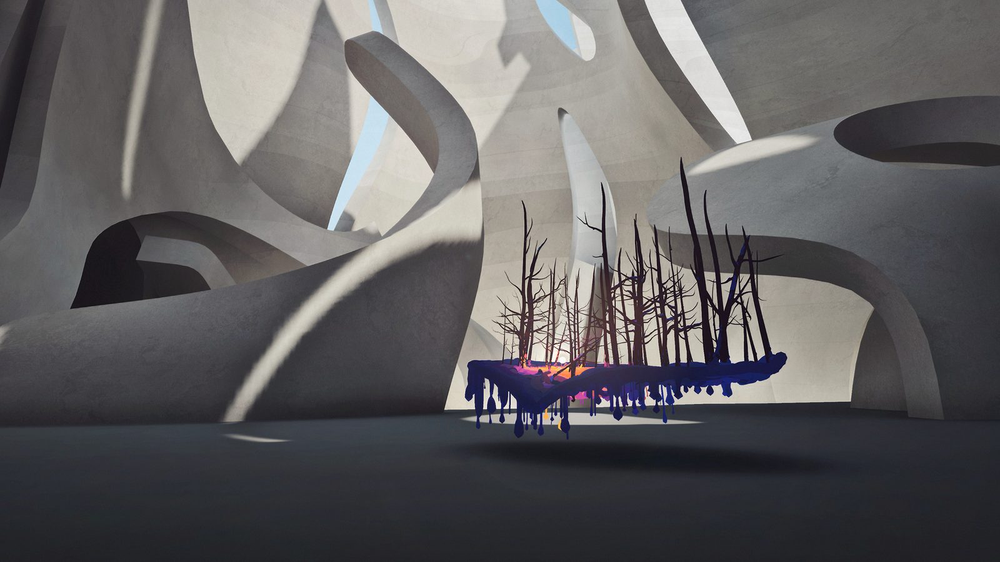
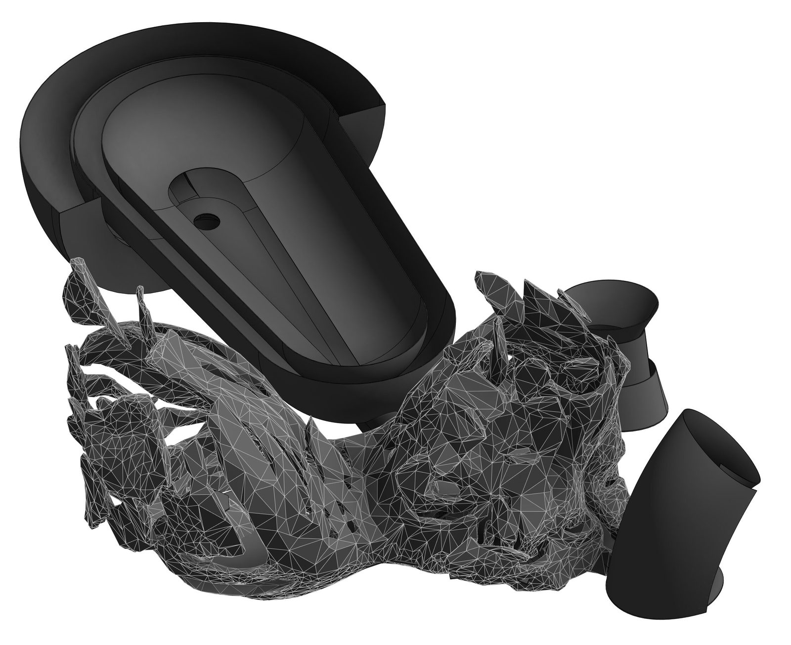
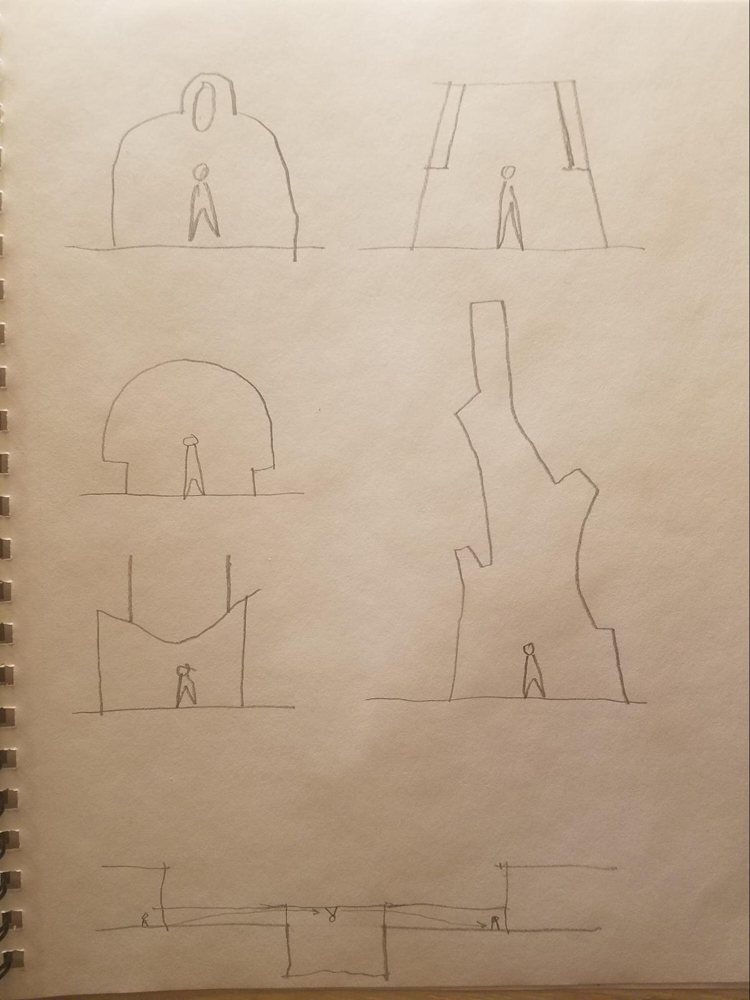
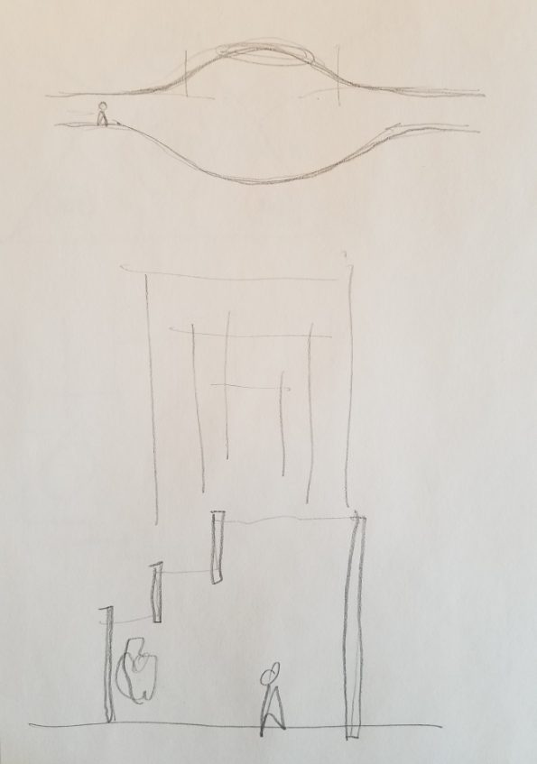
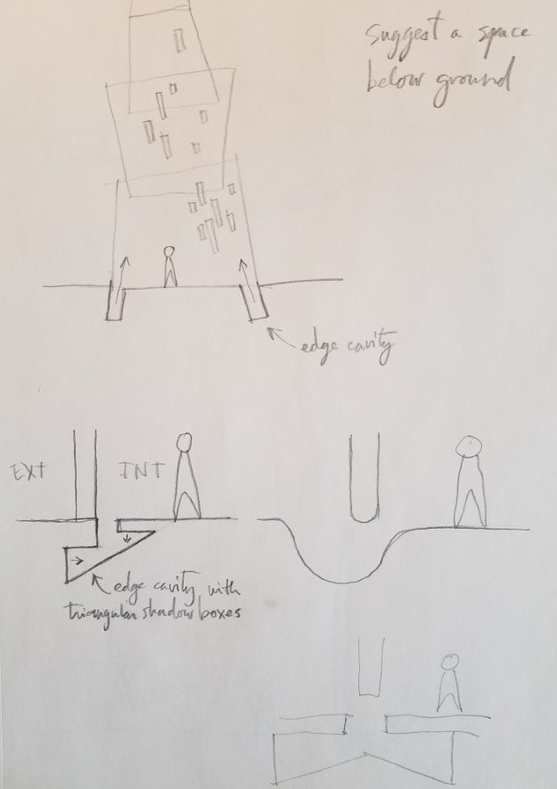
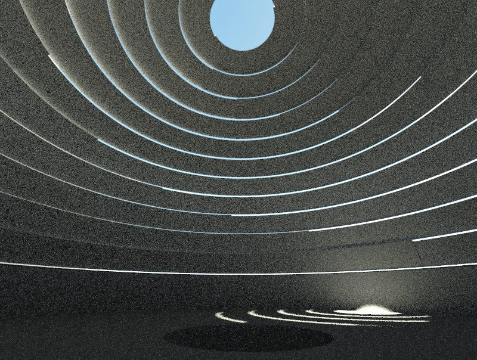
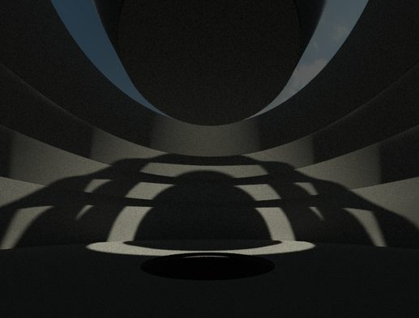
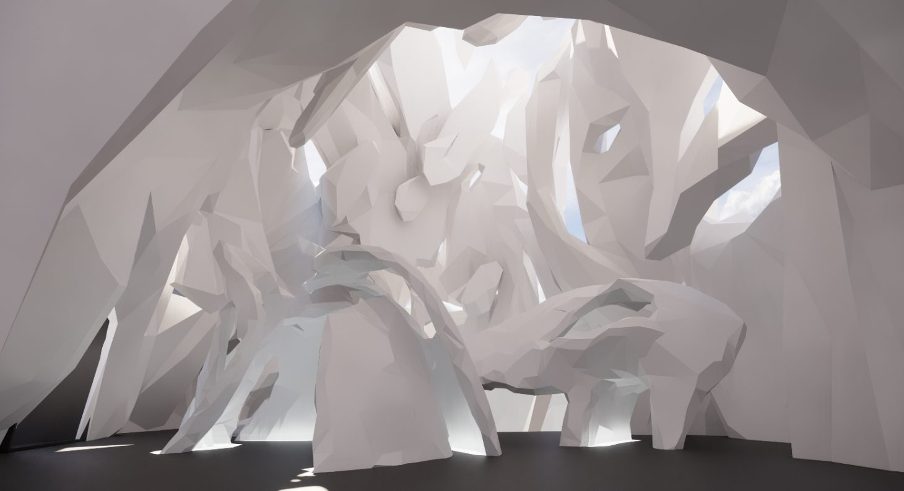
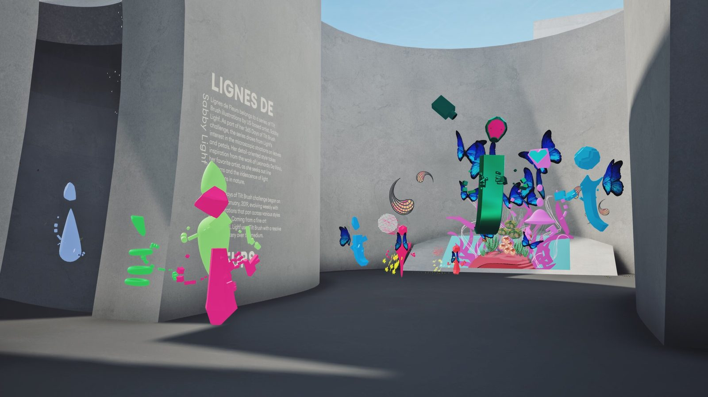

New realities require novel spatial solutions. A multi-year collaboration designing the architecture for one of the first permanent virtual reality art museums.
Les nouvelles réalités exigent des solutions spatiales inédites. Une collaboration de plusieurs années à concevoir l'architecture de l'un des premiers musées d'art permanents en réalité virtuelle.
The Museum of Other Realities (MOR) is a social VR platform that houses artworks from VR artists around the world. Between 2017 and 2019, Samuel designed the museum’s architectural spaces: galleries, corridors, transitional zones, and the grand entrance hall. The system is modular, designed to grow as the collection expanded.
Le Museum of Other Realities (MOR) est une plateforme sociale en réalité virtuelle qui abrite les œuvres d'artistes VR du monde entier. Entre 2017 et 2019, Samuel a conçu les espaces architecturaux du musée : galeries, corridors, zones de transition et grand hall d'entrée. Le système est modulaire, pensé pour croître au rythme de la collection.
The project began in 2017, when Samuel connected with the MOR founders while looking for VR artists to bring into the CULTVRAL gallery. He gave them a tour of CULTVRAL and sent them the geometry of the Light Museum to try in VR. From there, he joined the private beta events at the museum (then called “TH-er”), surrounded by VR artists from around the world. Over the following years, the collaboration deepened into a full architectural commission.
Le projet a débuté en 2017, lorsque Samuel est entré en contact avec les fondateurs du MOR alors qu'il cherchait des artistes VR à accueillir dans la galerie CULTVRAL. Il leur a fait visiter CULTVRAL et leur a envoyé la géométrie du Light Museum à essayer en réalité virtuelle. De là, il s'est joint aux évènements de bêta privée du musée (alors nommé « TH-er »), entouré d'artistes VR venus du monde entier. Au fil des années, la collaboration s'est approfondie pour devenir une véritable commande architecturale.
The spaces were conceived through conversations, sketches, parametric models, and hand sculpture in VR, a hybrid process that merged architectural precision with sculptural expression.
Les espaces ont été imaginés à travers des conversations, des croquis, des modèles paramétriques et de la sculpture à la main en réalité virtuelle, un processus hybride qui a fusionné la précision architecturale et l'expression sculpturale.
Simple parametric rooms, floors, stairs, and illuminated surfaces provided the structural logic. The grand hall was then separated into two twirling masses, sculpted entirely by hand in VR. The rigour of architecture merged with the expressive freedom of sculpture.
Des salles, des planchers, des escaliers et des surfaces lumineuses paramétriques tout simples fournissaient la logique structurale. Le grand hall a ensuite été scindé en deux masses tourbillonnantes, sculptées entièrement à la main en réalité virtuelle. La rigueur de l'architecture s'est fondue dans la liberté expressive de la sculpture.




In order to obtain a modular system of expandable rooms, the design process followed an unconventional order to allow for flexible modularity. First came the connections between rooms and corridors, then the rooms themselves. This provided a good arsenal of design solutions for the museum to weave spaces together as it grew, with each new gallery integrated into the existing circulation without disrupting the experience.
Pour obtenir un système modulaire de salles extensibles, le processus de conception a suivi un ordre inhabituel afin de permettre une modularité souple. Sont d'abord venues les connexions entre les salles et les corridors, puis les salles elles-mêmes. Cela a fourni tout un arsenal de solutions de conception permettant au musée de tisser ses espaces les uns aux autres à mesure qu'il grandissait, chaque nouvelle galerie s'intégrant à la circulation existante sans perturber l'expérience.
Each gallery room is visually isolated from the others, allowing extraordinarily complex artworks to coexist within the larger architecture. The constraints of virtual space shape form as fundamentally as gravity shapes physical buildings.
Chaque salle de la galerie est visuellement isolée des autres, ce qui permet à des œuvres d'une complexité extraordinaire de coexister au sein de l'architecture d'ensemble. Les contraintes de l'espace virtuel façonnent la forme aussi fondamentalement que la gravité façonne les bâtiments physiques.
New realities require novel spatial solutions. In virtual architecture, technology shapes form as fundamentally as gravity shapes physical buildings.
Les nouvelles réalités exigent des solutions spatiales inédites. En architecture virtuelle, la technologie façonne la forme aussi fondamentalement que la gravité façonne les bâtiments physiques.



The grand entrance hall was the most ambitious element of the design. Samuel wanted something dramatic and sculptural, a space that would announce the museum’s ambition from the moment of arrival.
Le grand hall d'entrée était l'élément le plus ambitieux du projet. Samuel voulait quelque chose de saisissant et de sculptural, un espace qui annoncerait l'ambition du musée dès l'instant de l'arrivée.
The hall was sculpted entirely by hand in VR, then merged with the parametric floor plans and structural elements. The result is a space that feels both architectural and geological, as if the museum were carved from the earth rather than built upon it.
Le hall a été sculpté entièrement à la main en réalité virtuelle, puis fusionné avec les plans paramétriques et les éléments structuraux. Il en résulte un espace à la fois architectural et géologique, comme si le musée avait été creusé dans la terre plutôt que bâti sur elle.

The Museum of Other Realities continues to operate as a social VR platform, hosting rotating exhibitions of VR art from artists around the world. The architecture functions as a curated sequence of spaces, each room producing its own quality of light, scale, and atmosphere, complementing and amplifying the art within.
Le Museum of Other Realities poursuit ses activités comme plateforme sociale en réalité virtuelle, accueillant des expositions tournantes d'art VR d'artistes du monde entier. L'architecture fonctionne comme une séquence d'espaces soigneusement composée, chaque salle produisant sa propre qualité de lumière, d'échelle et d'atmosphère, qui complète et amplifie les œuvres qu'elle abrite.
The project represents a critical step in Samuel’s practice: the moment when the constraints and possibilities of virtual space became his primary design material.
Le projet marque une étape déterminante dans la pratique de Samuel : le moment où les contraintes et les possibilités de l'espace virtuel sont devenues sa principale matière de conception.